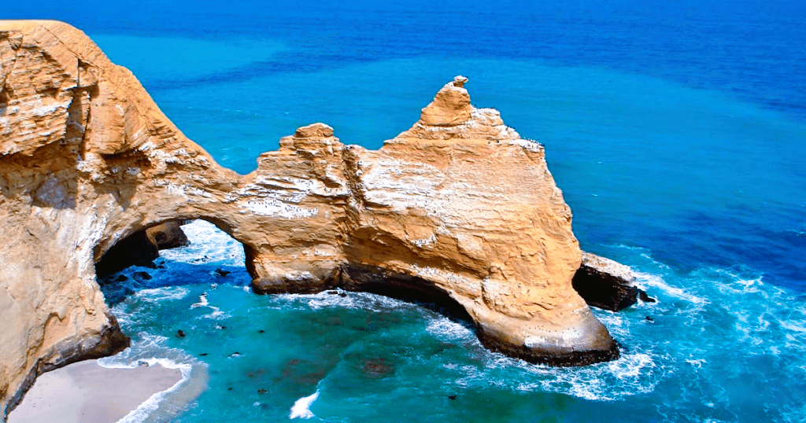
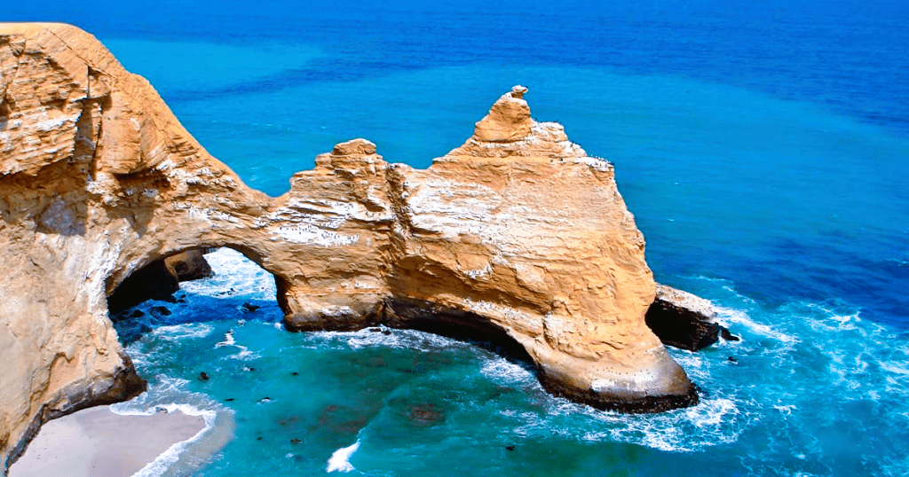

Al sur de Lima, viven en armonía lobos marinos, pingüinos de Humboldt, flamencos y otras especies protegidas. Es la Reserva Nacional de Paracas, que lleva
su nombre por las tormentas de arena o “paracas”, que son comunes en la zona. Al cruzar en bote hacia las Islas Ballestas, donde literalmente se alojan miles de
lobos marinos, puede verse claramente, en la ladera de un cerro, un enorme geoglifo de origen incierto llamado El Candelabro. Uno más de los enigmas a los
que nos tiene acostumbrados esta zona del Perú.
 
